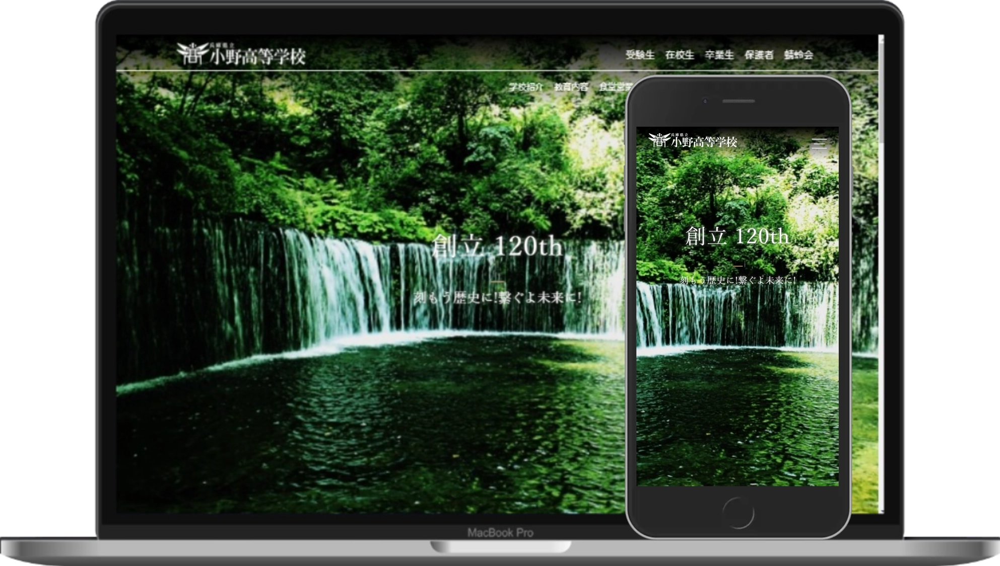

Ono High School
I am creating a website for my high school. This site development has now taken over 6 months to complete. Through the development of this site, I realized that all the wonderful sites in the world are the result of the unparalleled efforts of many engineers. You can see the website in development.